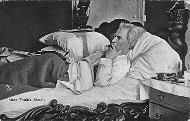

New York, New York
1867-1908
"He goes out foraging, he makes a capture, and then what does he do? Go home?
No, he goes anywhere but home." Mark Twain, A Tramp Abroad
21 Fifth Avenue
1904-1908
picture courtesy of Mark Twain Himself
"I have been fooling myself with the idea that I was going to leave New York every day for the last two weeks.
I have taken a liking to the abominable place, and every time I get ready to leave, I put it off a day or so, from
some unaccountable cause. It is as hard on my conscience to leave New York, as it was easy to leave Hannibal."
letter to Pamela Moffett, October, 1853, New York, New York, as quoted in Mark Twain Himself
Back to Quaker City | On to Washington
